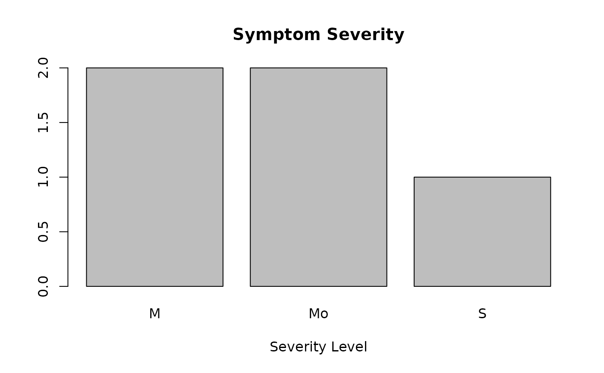
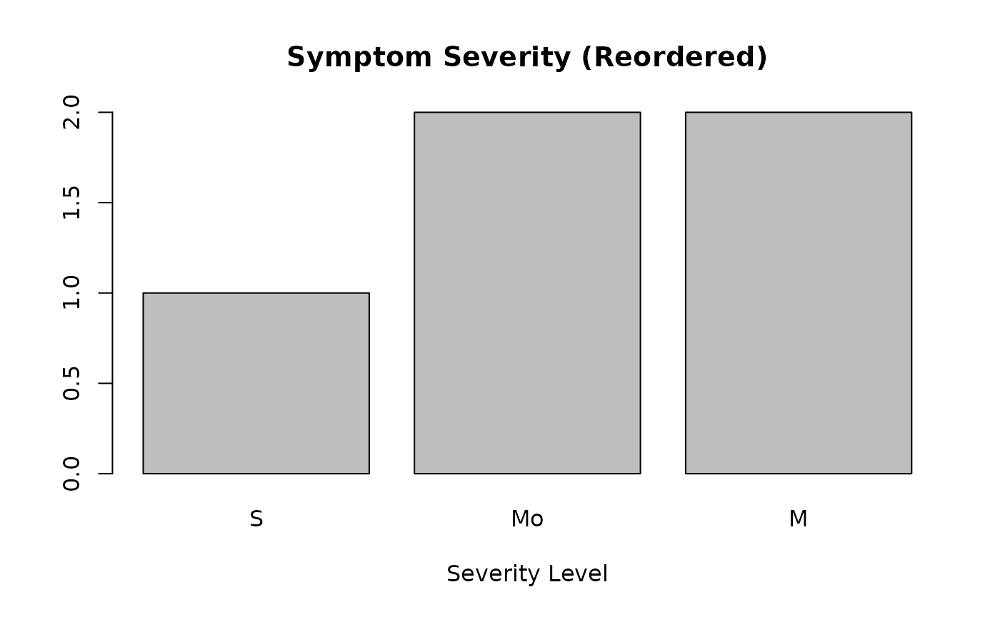

Lesson 1. Introduction to R
Yichao Hua
2024-11-29
1.basic-R.RmdIntroduction
Welcome to our course on single-cell RNA sequencing (scRNA-seq)
analysis using R! This course is designed for beginners with no prior R
programming experience. We’ll guide you through the process of analyzing
scRNA-seq data using R, with a focus on the Seurat and
SeuratExtend packages as our primary analytical
framework.
What is R?
R is an open-source programming language specifically designed for statistical computing and graphics. It’s widely used in bioinformatics and single-cell analysis due to its extensive collection of packages and large user community.
Setting Up Your Environment
To make using R easier and more productive, we recommend using RStudio, an integrated development environment (IDE) for R.
Installing R and RStudio
Follow these steps to set up your environment:
- Visit https://posit.co/download/rstudio-desktop/
- Choose the version suitable for your operating system (Windows, Mac, or Linux)
- Follow the prompts to download and install R first, then RStudio
- Once installed, open RStudio to begin programming
RStudio Interface
Here’s a brief explanation of the RStudio interface:

- Source Editor: Write and edit your R scripts here
- Console: Run R commands and see output
- Environment: View your current variables and data
- Files/Plots/Packages/Help: Access files, view plots, manage packages, and get help
In this course, we provide two types of files for you to use:
- R files (.R): These are plain text files containing R code. They’re ideal for writing and running scripts.
-
R Markdown files (.Rmd): These combine R code with
formatted text, allowing you to create dynamic reports.
- To use: Open in RStudio, write text and R code in chunks, then ‘Knit’ to generate a formatted output (e.g., HTML, PDF).
You can download all course files from: https://github.com/huayc09/single-cell-course
We recommend setting up a dedicated directory for this course where
you’ll store all your work and downloaded data. For consistency and
organization, we suggest creating a folder named
single-cell-course in your Documents directory, though you
can choose a different location if you prefer. Here are two ways to set
this up:
- Using R code (recommended):
# Create a directory called 'single-cell-course' in your Documents folder
# You can change this path to anywhere else on your computer if you prefer
dir.create("~/Documents/single-cell-course")
# Tell R to use this new folder as your working directory
# This means R will look for files and save outputs in this folder
setwd("~/Documents/single-cell-course")-
Using the manual approach with RStudio:
First, create the course directory:
- Open your system’s file explorer
- Navigate to your Documents folder
- Create a new folder named “single-cell-course”
Then set it as your working directory in RStudio:
- Go to Session > Set Working Directory > Choose Directory
- Navigate to and select your newly created “single-cell-course” folder
- Click ‘Open’
This directory will be your workspace throughout the course. Starting from Lesson 2, we’ll download necessary data files and store them here.
Basic R Programming
Let’s start with some fundamental concepts in R programming:
1. Basic Arithmetic
R can be used as a simple calculator. Try running these commands in the console:
2 + 3 # Addition## [1] 5
10 - 4 # Subtraction## [1] 6
5 * 2 # Multiplication## [1] 10
20 / 4 # Division## [1] 5
2^3 # Exponentiation## [1] 82. Variable Assignment
Variables allow you to store and manipulate data:
x <- 10 # Assign value 10 to variable x
x## [1] 10
y <- 5 # Assign value 5 to variable y
y## [1] 5
z <- x + y # Assign the sum of x and y to z
print(z) # Print the value of z## [1] 153. Basic Data Types
R has several basic data types. Here are the three most fundamental ones:
# Numeric (for numbers)
num <- 10.5
class(num)## [1] "numeric"
# Character (for strings)
char <- "Hello"
class(char)## [1] "character"
# Logical (for boolean values TRUE or FALSE)
log <- TRUE
class(log)## [1] "logical"Logical (boolean) variables are often used for filtering data. For example, you might use them to extract cells where a certain gene’s expression is above a threshold, or to select samples under specific conditions. We’ll explore this further in later lessons.
4. Vectors
In R, vectors are one of the most fundamental data structures. We’ve already created vectors with single elements, but vectors can contain multiple elements of the same type.
To create a vector with multiple elements, we use the
c() function (c stands for combine):
# Numeric vector
numbers <- c(1, 2, 3, 4, 5)
numbers## [1] 1 2 3 4 5
# Character vector
fruits <- c("apple", "banana", "cherry")
fruits## [1] "apple" "banana" "cherry"
# Boolean vector
bool_vec <- c(TRUE, FALSE, TRUE, TRUE)
bool_vec## [1] TRUE FALSE TRUE TRUER provides a simple way to create a sequence of numbers:
# Creates a vector of numbers from 1 to 10
seq_numbers <- 1:10
seq_numbers## [1] 1 2 3 4 5 6 7 8 9 105. Logical Operators
Let’s start by learning how to compare numbers:
a <- 5
b <- 7
# Comparison operators
a < b # Less than## [1] TRUE
a <= b # Less than or equal to## [1] TRUE
a > b # Greater than## [1] FALSE
a >= b # Greater than or equal to## [1] FALSE
a == b # Equal to## [1] FALSE
a != b # Not equal to## [1] TRUEWe can also combine multiple conditions using logical operators:
# Logical operations
(a > 3) | (b > 10) # TRUE if at least one condition is true## [1] TRUE
(a > 3) & (b < 10) # TRUE if both conditions are true## [1] TRUEHere, we introduce the logical operators AND (&) and
OR (|). These operate on boolean values. Another important
logical operator is NOT (!). These concepts are crucial and
we’ll explore their applications further in later lessons.
6. Retrieving Elements from Vectors
Retrieving elements is a fundamental operation in data manipulation. There are three main methods: using index, using logical vectors for indexing, and using names. Let’s explore each:
Using Index
numbers <- c(10, 20, 30, 40, 100) # Create a numeric vector
numbers[3] # Get the third element## [1] 30
numbers[c(1, 3, 5)] # Get the first, third, and fifth elements## [1] 10 30 100
numbers[2:4] # Get elements from index 2 to 4## [1] 20 30 40Using Logical Vector for Indexing
numbers[c(TRUE, FALSE, TRUE, FALSE, TRUE)]## [1] 10 30 100This selects the 1st, 3rd, and 5th elements where TRUE appears. This method is powerful when combined with logical expressions. For example, to get elements greater than 30:
numbers[numbers > 30]## [1] 40 100Let’s break down this expression:
# First, we create a logical vector
numbers > 30## [1] FALSE FALSE FALSE TRUE TRUE
# Then we use this logical vector to select elements
numbers[numbers > 30]## [1] 40 100In practice, we often need to combine multiple conditions. This is
where &, |, and ! come in
handy. For example, to select elements between 25 and 50:
numbers[numbers > 25 & numbers < 50]## [1] 30 40For beginners, let’s break this down step-by-step:
# Which elements are greater than 25?
high_expr <- numbers > 25
high_expr## [1] FALSE FALSE TRUE TRUE TRUE
# Which elements are less than 50?
low_expr <- numbers < 50
low_expr## [1] TRUE TRUE TRUE TRUE FALSE
# Combine conditions with AND (&)
high_and_low_expr <- high_expr & low_expr
high_and_low_expr## [1] FALSE FALSE TRUE TRUE FALSE
# Use this logical vector to select elements
numbers[high_and_low_expr]## [1] 30 40You can experiment with | and ! in a
similar manner.
Vector Operations with Names
We can also create named vectors and use names to retrieve elements:
# Creating a named vector
gene_expr <- c(gene1 = 100, gene2 = 200, gene3 = 150, gene4 = 300)
print(gene_expr)## gene1 gene2 gene3 gene4
## 100 200 150 300
# Accessing elements by name
gene_expr["gene2"]## gene2
## 200
# Accessing multiple elements by name
gene_expr[c("gene1", "gene3")]## gene1 gene3
## 100 1507. Changing and Removing Elements
You can modify vectors by changing, removing, or adding elements:
# Change the second element to 1000
numbers[2] <- 1000
numbers## [1] 10 1000 30 40 100
# Remove the third element
numbers <- numbers[-3]
numbers## [1] 10 1000 40 100
# Add new elements to the end of the vector
numbers <- c(numbers, 60, 70)
numbers## [1] 10 1000 40 100 60 70
# Add a new named element
gene_expr["gene5"] <- 250
gene_expr## gene1 gene2 gene3 gene4 gene5
## 100 200 150 300 250
# Change an element by name
gene_expr["gene2"] <- 180
gene_expr## gene1 gene2 gene3 gene4 gene5
## 100 180 150 300 2508. Installing and Loading Packages
While base R provides many functionalities, we often need additional packages to perform specific tasks, especially in bioinformatics and scRNA-seq analysis. Here’s how you can install and load packages:
Installing a package from CRAN
To install a package from CRAN (The Comprehensive R Archive Network),
you can use the install.packages() function. For example,
to install the popular data visualization package
ggplot2:
# install.packages("ggplot2")Note: We’ve commented out this code as we won’t run it during the class, but this is how you would typically install a package.
Loading a package
Once a package is installed, you need to load it into your R session to use its functions:
# library(ggplot2)Installing a Bioconductor package
Bioconductor is a repository for bioinformatics packages. To install
a Bioconductor package, you first need to install the
BiocManager package:
# if (!requireNamespace("BiocManager", quietly = TRUE))
# install.packages("BiocManager")
# BiocManager::install("DESeq2")9. Getting Help
R provides built-in help documentation for its functions. This is crucial when you’re learning how to use a new function or need to remind yourself of the details of a function you’ve used before.
There are two main ways to access help in R:
# Getting help for a function
?mean
help(mean)Both of these commands will open the help page for the
mean function, which includes a description of what the
function does, its arguments, and often examples of how to use it.
10. Data Frames
Data frames are table-like structures that are commonly used in R for storing and manipulating data. They are particularly useful because they can contain different types of data (numeric, character, logical) in different columns.
Key properties of data frames: - Each column must contain the same type of data (e.g., numeric, character) - Each row represents an observation or case - Column names must be unique
Let’s create a simple data frame and explore its properties:
# Creating a data frame
df <- data.frame(
sample = c("sample1", "sample2", "sample3", "sample4"),
expression = c(100, 200, 150, 300),
condition = c("control", "treatment", "control", "treatment")
)
print(df)## sample expression condition
## 1 sample1 100 control
## 2 sample2 200 treatment
## 3 sample3 150 control
## 4 sample4 300 treatment
# Dimensions of a data frame
dim(df)## [1] 4 3
nrow(df)## [1] 4
ncol(df)## [1] 3
# Column names
colnames(df)## [1] "sample" "expression" "condition"Accessing and Subsetting Data Frames
There are several ways to access data in a data frame:
# Accessing columns
df$sample## [1] "sample1" "sample2" "sample3" "sample4"
df[["sample"]]## [1] "sample1" "sample2" "sample3" "sample4"
df["sample"] # Returns a data frame## sample
## 1 sample1
## 2 sample2
## 3 sample3
## 4 sample4
# Subsetting a data frame
df[1:2, 2:3] # Row 1 and 2, column 2 and 3## expression condition
## 1 100 control
## 2 200 treatment
df[1, ] # First row, all columns## sample expression condition
## 1 sample1 100 control
df[df$condition == "control", c("sample", "condition")] # Control sample rows, "sample" and "condition" columns## sample condition
## 1 sample1 control
## 3 sample3 controlModifying Data Frames
We can add new columns or rows to a data frame, or modify existing values:
# Adding a new column
df$log_expression <- log2(df$expression)
df## sample expression condition log_expression
## 1 sample1 100 control 6.643856
## 2 sample2 200 treatment 7.643856
## 3 sample3 150 control 7.228819
## 4 sample4 300 treatment 8.228819
# Adding a new row
new_row <- data.frame(sample = "sample5", expression = 250, condition = "control", log_expression = log2(250))
df <- rbind(df, new_row)
df## sample expression condition log_expression
## 1 sample1 100 control 6.643856
## 2 sample2 200 treatment 7.643856
## 3 sample3 150 control 7.228819
## 4 sample4 300 treatment 8.228819
## 5 sample5 250 control 7.965784
# Changing specific values in a data frame
df[df$condition == "control", "condition"] <- "C"
df[df$condition == "treatment", "condition"] <- "T"
print(df)## sample expression condition log_expression
## 1 sample1 100 C 6.643856
## 2 sample2 200 T 7.643856
## 3 sample3 150 C 7.228819
## 4 sample4 300 T 8.228819
## 5 sample5 250 C 7.96578411. Matrices
Matrices are similar to data frames in that they are two-dimensional, but they have one key difference: all elements in a matrix must be of the same data type (usually numeric).
## [,1] [,2] [,3] [,4]
## [1,] 1 4 7 10
## [2,] 2 5 8 11
## [3,] 3 6 9 12
# Adding row and column names
rownames(m) <- c("gene1", "gene2", "gene3")
colnames(m) <- c("cell1", "cell2", "cell3", "cell4")
print(m)## cell1 cell2 cell3 cell4
## gene1 1 4 7 10
## gene2 2 5 8 11
## gene3 3 6 9 12Matrix Operations
Matrices support various mathematical operations:
# Matrix operations
t(m) # Transpose## gene1 gene2 gene3
## cell1 1 2 3
## cell2 4 5 6
## cell3 7 8 9
## cell4 10 11 12
m * 2 # Element-wise multiplication## cell1 cell2 cell3 cell4
## gene1 2 8 14 20
## gene2 4 10 16 22
## gene3 6 12 18 24
# Applying functions to rows or columns
colSums(m)## cell1 cell2 cell3 cell4
## 6 15 24 33
rowMeans(m)## gene1 gene2 gene3
## 5.5 6.5 7.5Subsetting Matrices
Like data frames, matrices can be subsetted:
# Subsetting a matrix
m[1, ] # First row## cell1 cell2 cell3 cell4
## 1 4 7 10
m[, 2] # Second column## gene1 gene2 gene3
## 4 5 6
m[1:2, 3:4] # Submatrix## cell3 cell4
## gene1 7 10
## gene2 8 11## cell2 cell4
## gene1 4 10
## gene3 6 12In the context of single-cell RNA sequencing analysis, matrices are often used to represent gene expression data, where rows typically represent genes and columns represent cells. Understanding how to manipulate these structures is crucial for effective data analysis in bioinformatics.
12. Factors
Factors are a special type of vector in R that are used to represent categorical data. They are similar to vectors but are limited to a predefined set of values, called levels.
# Creating a factor
symptoms <- factor(c("mild", "severe", "mild", "moderate", "moderate"))
print(symptoms)## [1] mild severe mild moderate moderate
## Levels: mild moderate severe
# Levels of a factor
levels(symptoms)## [1] "mild" "moderate" "severe"## [1] M S M Mo Mo
## Levels: M Mo S
# Using factors in data analysis
counts <- table(symptoms)
counts## symptoms
## M Mo S
## 2 2 1One important application of factors in data visualization is ordering. We can change the order of factor levels without changing the factor’s content:
# Example of how factor level order affects plotting
counts <- table(symptoms)
barplot(counts, main="Symptom Severity", xlab="Severity Level")
# Changing the order of levels
symptoms_reordered <- factor(symptoms, levels = c("S", "Mo", "M"))
print(symptoms_reordered)## [1] M S M Mo Mo
## Levels: S Mo M
# Changing the order for a different visualization
counts_reordered <- table(symptoms_reordered)
barplot(counts_reordered, main="Symptom Severity (Reordered)", xlab="Severity Level")
13. Lists
Lists in R are versatile data structures that can contain elements of different types, including other lists.
# Creating a list
patient <- list(
id = "PT001",
age = 45,
symptoms = c("fever", "cough"),
test_results = data.frame(
test = c("PCR", "Antibody"),
result = c("Positive", "Negative")
)
)
print(patient)## $id
## [1] "PT001"
##
## $age
## [1] 45
##
## $symptoms
## [1] "fever" "cough"
##
## $test_results
## test result
## 1 PCR Positive
## 2 Antibody Negative
# Accessing list elements
patient$id## [1] "PT001"
patient[["age"]]## [1] 45
patient[[3]]## [1] "fever" "cough"## $id
## [1] "PT001"
##
## $age
## [1] 45
##
## $symptoms
## [1] "fever" "cough"
##
## $test_results
## test result
## 1 PCR Positive
## 2 Antibody Negative
##
## $medication
## [1] "Aspirin" "Cough Syrup"
# Nested list operations
patient$test_results$result## [1] "Positive" "Negative"14. If-Else Statements
If-else statements allow you to execute different code blocks based on certain conditions.
# Example 1: Checking gene expression levels
gene_expression <- 100
if (gene_expression > 50) {
print("High expression")
} else {
print("Low expression")
}## [1] "High expression"
# Example 2: Classifying cells based on marker gene expression
cd4_expression <- 80
cd8_expression <- 20
if (cd4_expression > 50 & cd8_expression < 30) {
print("This cell is likely a CD4+ T cell")
} else if (cd8_expression > 50 & cd4_expression < 30) {
print("This cell is likely a CD8+ T cell")
} else {
print("Cell type is uncertain")
}## [1] "This cell is likely a CD4+ T cell"15. Basic For Loops in R for scRNA-seq Analysis
For loops are used when we need to repeat a series of operations multiple times. For example, we might need to read sequencing data for 20 samples. Instead of copying and pasting the same code 20 times and manually changing each value, we can use a loop.
The basic format of a for loop is:
for (variable in sequence) {
# code to be repeated
}Here are some examples:
# Example 1: Printing numbers from 1 to 5
for (i in 1:5) {
print(i)
}## [1] 1
## [1] 2
## [1] 3
## [1] 4
## [1] 5
# Example 2: Calculating mean expression for multiple genes
genes <- c("GENE1", "GENE2", "GENE3", "GENE4")
expression_values <- list(
GENE1 = c(10, 20, 15, 25),
GENE2 = c(50, 60, 55, 65),
GENE3 = c(5, 8, 6, 7),
GENE4 = c(100, 120, 110, 130)
)
print(expression_values)## $GENE1
## [1] 10 20 15 25
##
## $GENE2
## [1] 50 60 55 65
##
## $GENE3
## [1] 5 8 6 7
##
## $GENE4
## [1] 100 120 110 130
for (gene in genes) {
mean_expression <- mean(expression_values[[gene]])
cat("Mean expression of", gene, ":", mean_expression, "\n")
}## Mean expression of GENE1 : 17.5
## Mean expression of GENE2 : 57.5
## Mean expression of GENE3 : 6.5
## Mean expression of GENE4 : 115In this last example, we’re iterating over a list of genes, calculating the mean expression for each gene, and printing the results. This demonstrates how loops can be used to perform repetitive tasks efficiently in the context of gene expression analysis.
16. Working with File Paths
In many cases, we need to interact with files on our hard drive. This could be for reading large external datasets (like CSV files downloaded from the GEO database) or exporting our analysis results to files (CSV or Excel). Understanding how to work with file paths is crucial for these operations.
## [1] "/home/hyc/Documents/GitHub/SeuratExtend/vignettes/single-cell-course"
# Set working directory
# setwd("/path/to/your/directory") # Uncomment and modify as needed
# Construct file paths
results_dir <- "results"
csv_file <- file.path(results_dir, "gene_expression.csv")
print(csv_file)## [1] "results/gene_expression.csv"
# Create the 'results' directory if it doesn't exist
if (!dir.exists(results_dir)) {
dir.create(results_dir)
print(paste("Created directory:", results_dir))
}17. Writing and Reading CSV Files
CSV (Comma-Separated Values) files are a common format for storing tabular data. R provides functions to easily read from and write to CSV files.
# Create a sample data frame to write
gene_data <- data.frame(
gene_id = c("GENE1", "GENE2", "GENE3", "GENE4"),
expression_level = c(10.5, 20.3, 15.7, 30.2),
p_value = c(0.001, 0.05, 0.01, 0.001)
)
print(gene_data)## gene_id expression_level p_value
## 1 GENE1 10.5 0.001
## 2 GENE2 20.3 0.050
## 3 GENE3 15.7 0.010
## 4 GENE4 30.2 0.001
# Write the data frame to a CSV file
write.csv(gene_data, file = csv_file, row.names = FALSE)
print(paste("Data written to CSV file:", csv_file))## [1] "Data written to CSV file: results/gene_expression.csv"## gene_id expression_level p_value
## 1 GENE1 10.5 0.001
## 2 GENE2 20.3 0.050
## 3 GENE3 15.7 0.010
## 4 GENE4 30.2 0.001
# Read a specific number of rows
gene_data_head <- read.csv(csv_file, nrows = 2)
print("First 2 rows of data:")## [1] "First 2 rows of data:"
print(gene_data_head)## gene_id expression_level p_value
## 1 GENE1 10.5 0.001
## 2 GENE2 20.3 0.05018. Writing and Reading RDS Files
While CSV is a text-based format that can store tabular data, many R objects cannot be easily converted to text. For these cases, R provides the RDS (R Data Serialization) format, which can store any R object.
# Write the data frame to an RDS file
rds_file <- file.path(results_dir, "gene_expression.rds")
saveRDS(gene_data, file = rds_file)
print(paste("Data written to RDS file:", rds_file))## [1] "Data written to RDS file: results/gene_expression.rds"## gene_id expression_level p_value
## 1 GENE1 10.5 0.001
## 2 GENE2 20.3 0.050
## 3 GENE3 15.7 0.010
## 4 GENE4 30.2 0.001RDS files are particularly useful when working with complex R objects, such as large data frames, lists, or custom objects that you want to save and reload later without losing any information or structure.
Conclusion and Next Steps
Congratulations! You have completed the preparatory work for learning R programming. Our next step will be to dive into single-cell analysis. To begin this journey, we need to install the Seurat package, which is a powerful toolkit for single-cell genomics.
install.packages("Seurat")Note: If you’ve never used related R packages before, you might be prompted to install Rtools (on Windows). You can download the appropriate version from the official website following these instructions: https://cran.rstudio.com/bin/windows/Rtools/
Tips for Learning R
A crucial skill in R programming is the ability to search documentation and find help resources. Once you understand these basic principles, you don’t need to memorize the spelling of every function name or the usage of every parameter - that would be nearly impossible given the vast number of functions and parameters you’ll encounter.
The key is knowing how to find these functions and their
corresponding usage. In this course, we introduced the use of
? to display help documentation. Official package websites
often have tutorials for reference.
Moreover, the rise of large language models has significantly changed the game. They can help you quickly and easily master a language with remarkable efficiency. You can ask any question to a chatbot, and it will provide you with detailed explanations. We recommend Claude and ChatGPT:
Remember, the journey of learning R and bioinformatics is ongoing. As you progress, you’ll find that your ability to solve problems and find information improves. Don’t be discouraged if you encounter difficulties - they’re a natural part of the learning process.
In our next lesson, we’ll start exploring the Seurat package and begin our journey into single-cell RNA sequencing analysis. Get ready for an exciting adventure in the world of bioinformatics!